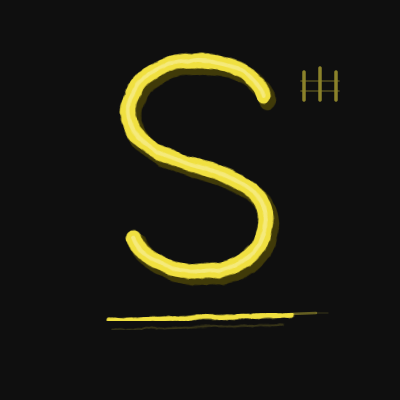
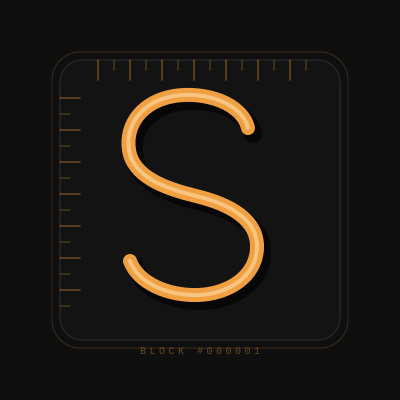
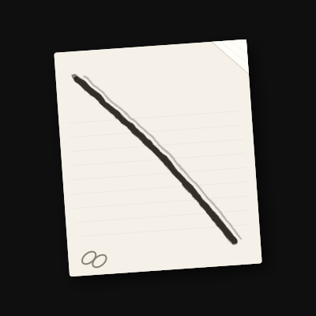
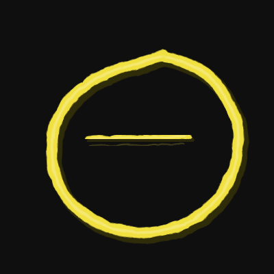
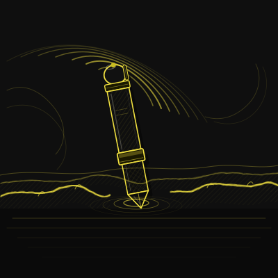
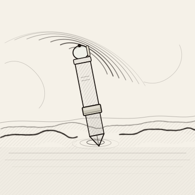

The Scratcher Project — Internal
Four directions for the project mark. All share the same palette and core ideas: built from scratch, Bitcoin inscriptions & on-chain legacy, and blank-paper freedom — no restrictions, freehand. Each takes a different angle on those themes.

Variant A
A single scratch stroke drawn in one swift motion — the S of Scratcher as a physical act. The stroke tapers at both ends like a fingernail dragged across a surface. The underline overshoots, the way a pen does when you're moving fast. Three tick marks in the corner echo ordinal / inscription notation: the hash symbol, Bitcoin's native language.

Variant B
A blockchain block with an S chiselled into its face — like an Ordinal inscription on Bitcoin. The edge notches mimic a hex-dump ruler or block-header ticks: data made visible. The engraved S uses a shadow / highlight technique to look carved in stone. Permanent. On-chain. The orange palette nods directly to Bitcoin.

Variant C
A white sheet, slightly tilted, with a folded corner and faint ruled lines — the open canvas. One bold freehand scratch is the only mark on it. The page says: no predefined path, no restrictions, start anywhere. The scratch says: but someone did start, here, from nothing. Two interlocked chain links in the corner are the crypto thread running through it all.

Variant D
An imperfect single-stroke circle — a Zen enso — open at the top. The gap is intentional: the space where the user writes their own ending. The horizontal scratch inside is the work itself, contained within the open freedom. Where the brush lifted off, ink dissipates to dots. Wholeness through imperfection; freedom through openness.
Based on a source sketch: a pen standing in a turbulent ocean with a swirling sky. The pen doesn't bend — it inscribes from inside the chaos. Three executions: dark scene, minimal icon, and ink-on-paper.

Series 2 · A
The complete composition in the site's scratch-yellow palette. Swirling vortex arcs fan from behind the pen — six layers, each larger and slightly rotated, building the storm. The wave crest splits at the pen's entry point. Hatching on the water and barrel gives it the manga ink-sketch quality of the source image. Ripple rings mark where the nib meets the surface.
Series 2 · B
The same mark distilled to its three essential shapes: three swirl arcs, the pen silhouette, and the split wave. Built for 32–64px. Rounded-rect container so it works as a favicon, app icon, or nav logo. Every element has been reduced to the minimum number of points that still reads as the full scene.

Series 2 · C
Black ink on off-white paper — the closest to the source sketch. Identical geometry, inverted palette. The hatching now reads as classic pen-and-ink illustration. Use on light backgrounds, in print, or anywhere the dark version would reverse out. The paper tone ties to the “blank page” freedom theme.